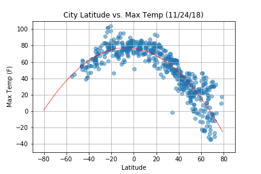

Maximum Temperature

Due to the curvature of the earth, the equator is consistently the closest point on the planet to the sun. While the tilt of the axis provides each hemisphere with seasons, we would still expect to see the highest temperatures at 0 degrees latitude. Is this what the data shows?
Unlike our other scatterplots, we see points tightly clustered together following a curved, line, peaking at about 0 degrees latitude, indicating that the max temperature of a city does correlate to its latitude. To take this a step further, I used the linear regression function from the scipy.stats package to find a line of best fit. The line is polynomial and has the equation y = -0.01x2 + -0.18x + 76.8.